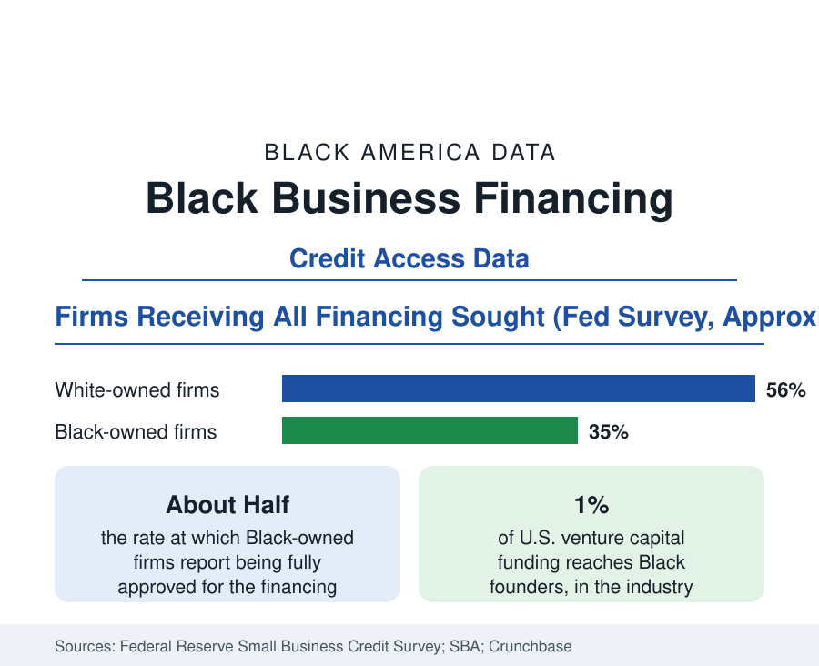

Black Business
Financing a Black-Owned Business: What the Lending Data Show
Black business owners are approved for full financing at roughly half to two-thirds the rate of White owners in the Federal Reserve's credit surveys. The lending data.

Capital is the binding constraint on Black business in every dataset this section holds, and the lending data measure it directly. In the Federal Reserve's Small Business Credit Survey — the annual survey of thousands of employer firms — Black-owned firms report receiving all of the financing they sought at rates on the order of half to two-thirds those of White-owned firms, carry more debt aversion for documented reasons, and start with a fraction of the capital. This article reports the credit data: bank lending, SBA programs, community lenders, and venture capital, in sequence.
The Credit Survey Record
The Small Business Credit Survey asks firms what they sought, where they applied, and what they received. Black-owned firms' applications concentrate at large banks in the same proportions as other firms', but approval diverges: full approval for loans, lines of credit, and other financing arrives for roughly a third of Black applicants against well over half of White applicants in recent survey years, with partial approval and denial filling the difference. The survey's risk attributions are revealing: lenders' stated reasons concentrate on credit history and insufficient collateral — both downstream of the household wealth distribution in the census data — and Black owners report the nation's highest rates of discouragement, defined as needing financing but not applying because denial was expected. Discouragement is the survey's largest single gap: it removes firms from the applicant pool before any approval statistic is computed, so the approval gap understates the access gap.
SBA and Community Lending
The Small Business Administration's guaranteed loan programs are the federal layer. Black borrowers' share of the flagship 7(a) program's loans runs in the mid-to-high single digits by count in recent fiscal years — below the Black share of business ownership, rising slowly, and concentrated in smaller average loan sizes. Community development financial institutions and minority depository institutions are the counterweight channel: CDFIs lend disproportionately to Black borrowers by design, and the nation's Black-owned banks — roughly twenty institutions by the FDIC's minority depository count, down from more than forty a generation ago — anchor lending in their communities at volumes out of proportion to their asset size. The pandemic-era Paycheck Protection Program supplied the natural experiment: its first round, distributed through conventional bank relationships, reached Black-owned firms late and thinly in the academic analyses; its later rounds, opened to CDFIs and fintech channels, narrowed the distribution gap measurably — the lending literature's clearest demonstration that channel design determines who gets credit.
Venture Capital: The One Percent
At the equity end, the figures are the starkest in American finance: Black founders receive on the order of 1 percent of United States venture capital funding in the industry tallies, and Black women founders a fraction of that fraction. The pipeline explanations — network access, pattern matching by investors, geographic concentration of venture firms — are the literature's standard account, and the corrective institutions (Black-led funds, corporate venture commitments, accelerator pipelines) have grown without yet moving the aggregate share materially in the annual counts. The consequence for the business data is structural: the high-growth, venture-scaled segment of Black business remains tiny relative to the founder base, and Black business growth runs overwhelmingly through the debt and revenue channels this article describes first.
Starting Capital and the Wealth Link
Beneath all three channels sits the starting-capital distribution. The Panel Study and Kauffman firm surveys show Black founders starting with roughly a third of the capital of White founders on the median, supplied disproportionately from personal savings against the thinner household balance sheet of the wealth data, with home equity — the standard American small-business collateral — available at the rate of the Black homeownership figures. The financing data and the wealth data are therefore the same data at two points in time: yesterday's wealth gap is today's credit file, and today's credit outcomes become tomorrow's wealth data. Every intervention the policy literature evaluates — CDFI capitalization, SBA program design, bank CRA enforcement, baby-bond and down-payment proposals — is an attempt to interrupt that loop at one of its points.
Reading the Financing Data
Summarized: full-approval rates roughly half to two-thirds the White figure, the nation's highest discouragement, a 1 percent venture share, and a third of the median starting capital. Black business outcomes — the scale distribution, the receipts gap, the survival tables — should be read downstream of these four numbers. They are the section's cause layer, and the series this reference watches first.
More in Black Business
Black-Owned Businesses: Counts, Receipts, and the Representation Gap
About 161,000 Black-owned employer firms and three million solo ventures: how the Census Bureau counts Black business ownership, where firms concentrate, and the gap between population share and business share.
Black Median Net Worth: The Wealth Gap in Federal Reserve Data
The Federal Reserve puts Black median family net worth at $44,900, against $285,000 for White families — about 16 cents on the dollar. The widest gap in economic data.
Black Buying Power: The $1.8 Trillion Consumer Economy
Black buying power is estimated at about $1.8 trillion — larger than the economy of most nations. What the figure measures, who produces it, and what it buys.
Source: Federal Reserve, Small Business Credit Survey; U.S. Small Business Administration lending data; Crunchbase venture funding analyses.